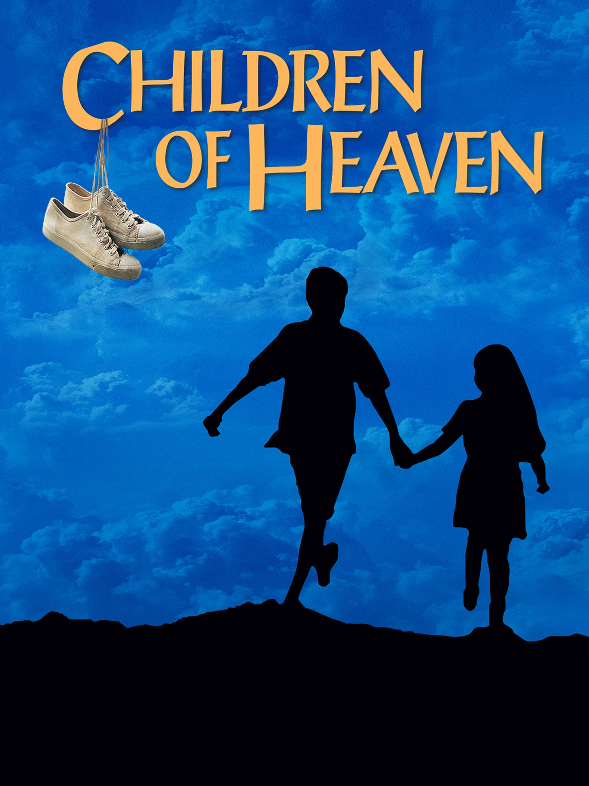

Films influenced by Islamic traditions often explore themes of faith, community, justice, and the daily practice of submission to God. Rather than grand spectacles, many of these films focus on the quiet dignity of ordinary life—the bonds of family, the ethics of honest living, and the struggle to do right in a complicated world. The examples here show one way Islamic values and imagery appear in cinema, not the full breadth of this rich tradition.

Majid Majidi's Children of Heaven tells the story of a brother and sister in Tehran who share a single pair of shoes after the boy accidentally loses his sister's only pair. Rather than burden their struggling parents, the children devise a plan to share the shoes between their school shifts. The film beautifully portrays Islamic values of family solidarity, honesty, humility, and perseverance—showing how faith shapes the quiet heroism of everyday life.